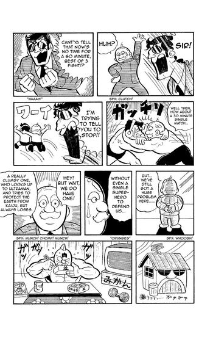
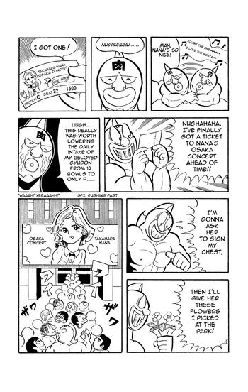
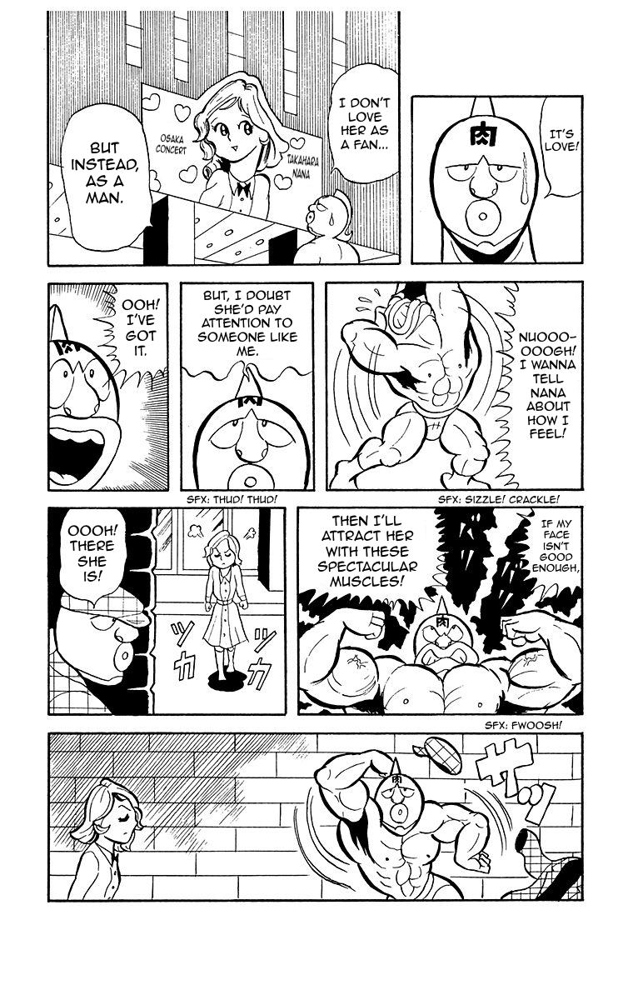
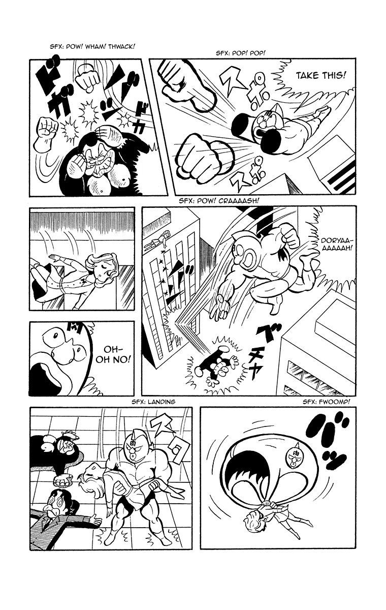
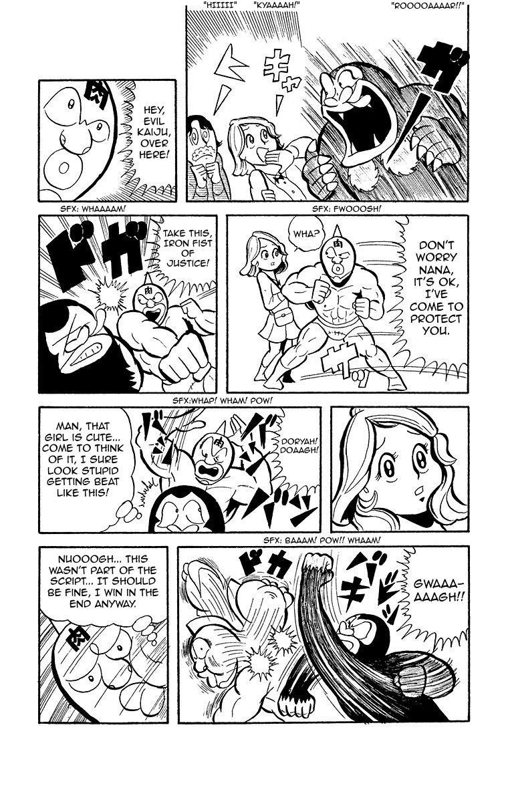
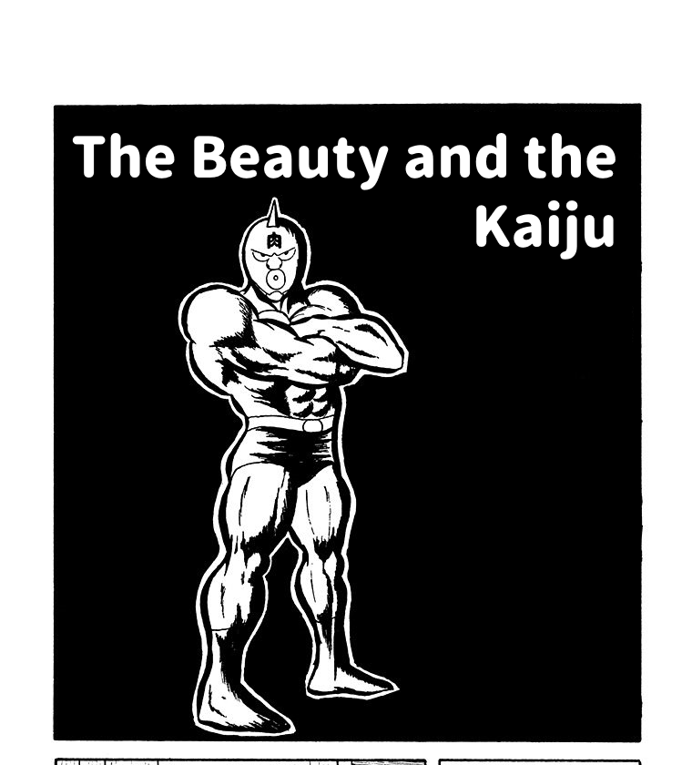

NEW YORK CITY

Kinnikuman is hiding. He's a Chojin — a superhuman wrestler — but in America, that doesn't mean much. The world has all kinds of strange-looking beings walking around. Nobody stares. Chojin wrestling is massive in Japan, practically a religion. In America, it's a sideshow. The serious talent stays overseas because that's where the respect is.
He likes it that way. He eats bland food, avoids garlic, and covers the mark on his forehead. Most importantly, he doesn’t talk about where he came from or all that’s happened to him in Japan.
But this is America and that’s perfectly normal. In fact, he loves it. If you know him, you know he’s a prince. But there’s no need to act like one in New York without fear of shame. Because America is shameless. And he’s finally at peace with who he is - even if no one knows who that really is.
And then one day, the taco shop is robbed and his friends are under threat. Until now, he’s avoided fighting…but he’s been eating garlic beef in the back. And his body moves before his brain catches up. One second he's a quiet guy behind the counter, the next he's put someone through a wall and demolished half the restaurant.
This is Burning Inner Strength — what happens when Kinnikuman's conscious mind gets out of the way and his body fights on pure instinct. He doesn't choose it. He definitely doesn't want it. And now he owes his boss for a destroyed taco shop.
An underground fight offer comes. He takes it for the money, trying to hold back. But soon enough, he’s going full Chojin. Word spreads fast. He picks up a few more fights — small-time underground circuit stuff. Some local promoter starts booking him. It's grimy, it's anonymous, and it pays. That's all Kinnikuman wants.
But you can't hide that kind of talent for long.
TERRY MANN
is an American Chojin — the only one who's made a real name for himself stateside. Part wrestler, part promoter, he’s Vince McMahon if McMahon could actually fight.
He trained in Japan, came home, and he's been trying to build Chojin wrestling in America for years. The problem is no top Japanese talent will relocate to a market that doesn't respect them. Terryman's been waiting for a star. He just found one.
He recruits Kinnikuman into his circuit. It's small-time — B-tier fighters, modest venues — but it's real. Kinnikuman accepts for the money, not the glory. He's still hiding. Just in a new costume. And he tears through the competition. Not because he's great — because the American league is weak. The talent gap between the US and Japanese circuits is massive. But the crowd doesn't care about rankings. They see a shameless, weird, pig-faced fighter who wins ugly.
And America loves an underdog.
THE RISE
Kinnikuman starts getting recognized. Small stuff at first — people pointing at him on the street, a few fans at the taco shop. Then bigger. Terry books him at better venues. The crowds grow. Kinnikuman discovers something he's never had before: people cheering for him.
And he wants more. He watches girls flock to Terry after fights and burns with a jealousy so transparent it's almost sweet. He wants the fame. He wants the attention. He wants someone to photograph him. This is the most authentically Kinnikuman thing about him — he's not a humble hero biding his time. He craves celebrity with the naked desperation of a man who's been invisible his entire life.
Natsuko arrives as a journalist covering Terry's circuit. She spots Kinnikuman and something catches her eye. Not because he's impressive. Because he's real in a way the rest of the circuit isn't.
A weaker Chojin — the Big Slice, a stocky guy with a pizza-shaped head and zero credentials — gets mocked before a match. Kinnikuman steps in. "What's wrong with being weak?" It's not a speech. It's a blurt. The crowd laughs, then something shifts.
Natsuko keeps her camera on Kinnikuman. She saw the real thing. This is their meet-cute — she's looking for the better story, and she just found it.
AND THAT’S WHEN MEAT SHOWS UP

His tiny, loyal trainer has been searching the galaxy for him. And finally, he hears about the new chojin in New York and comes to find his prince. Soon, Meat becomes his new trainer and corner man. But Kinnikuman won't talk about the past. He's trying to have both lives — American fame with Japanese identity hidden.
At their next match, Meat introduces Kinnikuman…the crown prince of Planet Kinniku
The crowd goes silent. Then confused.
"Wait — pig face? The garlic guy? That's the LOSER from Japan?"
His cover is blown. Two lives just collided in public. And there's no going back.
EVERYTHING GETS WORSE

Everything gets worse from here.
Terryman learns the full story and does what a promoter does: sees the angle. Exiled prince versus his homeland? That's a main event. He books elite Japanese Chojin fighters for a marquee show at Madison Square Garden — without Kinnikuman's consent. He tells himself it's good for everybody. It's good for business. And here's the thing — he's not entirely wrong. Kinnikuman does need to face his past. Terryman's just doing it for the wrong reasons.
THE LOW POINT
He can't go back to the taco shop. Can't go underground — his face is everywhere now. Can't go home. The thing about having your one coping mechanism destroyed is that you find out what's underneath it, and what's underneath Kinnikuman's hiding is nothing. Just the shame, without even the distraction of pretending it doesn't exist.
He eats bad food in a bad apartment and watches clips of his own humiliation on a screen. His father's shadow — the king who dropped his son from a spaceship — has never felt closer, even from 500 billion light-years away.
This is worse than where he started. Before the movie, he was hiding and nobody knew. Now he's hiding and everyone knows. His anonymity is gone forever. His fans saw him quit. Meat is gone — rejected. Terry is compromised. He has nobody. And it's partly his own fault.
THE RETURN
Wherever Kinnikuman is hiding, Meat shows up. Doesn't give a speech. Doesn't try to convince him. Just sits there. Because that's what Meat does — he never leaves. Not when Kinnikuman pushes him away. Not when it's hopeless.
Kinnikuman learns the matches are happening. The B-tier American fighters — the little guys who welcomed him — are going to face elite Chojin at Madison Square Garden. They'll be broken. Because of him. Because he ran.
And that's when it clicks. Running from the people who love you is exactly what his father did to him. He's been repeating the pattern his whole life. He won't be his father. He won't throw someone away.
For the first time in the movie, he munches down some garlic.
MADISON SQUARE GARDEN
The Fight
Kinnikuman walks into MSG knowing every person in the world can see exactly who he is. The prince who ran. The joke. Pig-face. Garlic man. He's choosing to be fully, completely seen — which is the one thing he's spent the entire movie avoiding. That's the sacrifice. Not his life. His hiding.
Terryman sees him arrive. Something breaks open. He realizes what he's done — used this person. He has a choice: businessman or friend. Stay in the skybox or step into the ring.
THE FIGHT AGAINST ROBIN MASK
isn’t even close. Technical perfection against sloppy desperation. It's almost funny how outmatched Kinnikuman is. Robin is barely trying. Then the Tower Bridge. Robin's signature backbreaker. Kinnikuman's spine is bent to the limit.
Robin asks: "Do you give up?"
No.
Asks again.
No.
THREE TIMES
Kinnikuman tries to fight back with everything he's learned in America — Terryman's coaching, ring tricks, showmanship. Robin counters all of it. The American playbook isn't enough. The person he's been pretending to be can't win this fight.
Then his mind shuts off. Burning Inner Strength activates — and the animation changes. Frame rate shifts. The audience feels it before they understand it. Kinnikuman stops thinking and his body takes over. Moves he doesn't know. Precision he can't access when he's trying.
Terryman enters the ring. Uses the Calf Branding for the first time — the signature move he's been avoiding because of his prosthetic leg. He stops hiding his damage at the same moment Kinnikuman stops hiding his identity. They save each other by dropping the act.
And then the comedy delivers the emotional turn. Meat throws gyudon mid-fight. The crowd laughs. Kinnikuman eats it. And the garlic — the absurd, embarrassing, food-based power source that everyone mocked — shifts Burning Inner Strength into its second stage. Fighting for friends.
The comedy IS the power system. The power system IS the emotional climax.
The Kinniku Buster. The signature move. An 8-second unbroken shot — ground to apex to devastating impact. But the win is clean. Kinnikuman could destroy Robin. He doesn't. The finishing move wins without killing. Mercy over brutality.

The Turn
The Face Flash. During the finish, Kinnikuman's mask lifts slightly. Light erupts from underneath. The KIN mark appears on his forehead — the royal birthright he's been covering since page one. Nobody fully understands what it means. But they feel it. His identity manifesting not because he claimed it, but because he stopped running from it.
The crowd shifts. From confused, to divided, to chanting his name.
Robin, on the mat: "You're still the worst fighter I've ever seen." Beat. "But I've never seen anyone refuse to die like that."
Not a handshake. Not yet. A crack. The start of something the franchise will build on for years.

Kinnikuman walks out with Meat and Terryman. "Can we get gyudon?" He hasn't changed who he is. He's changed how he sees himself. That's the point.

“But I’ve never seen anyone refuse to die like that.”
Beat 1. A dark room. A screen showing Kinnikuman's MSG fight on replay. A figure watches — half-machine, half-feral. Bear claws retract slowly. Warsman has received new orders. He's coming.
Beat 2. Planet Kinniku. A throne room. King Kinniku watches the same broadcast. His son — the one he dropped from a spaceship — just became famous on the planet he was thrown to. The king's expression is unreadable. Shame? Pride? Fear? He turns to his council: "Bring him home."
Film 1 is a complete story. But the property is built for a franchise, and the road is already paved.
Film 2 introduces the Dream Chojin Tag Tournament — the manga's most beloved arc. Kinnikuman and Terry, now partners, enter as a team. The tournament draws fighters from every faction: Justice Chojin, Devil Chojin, and the Perfect Chojin — three philosophical camps that represent protection, power, and perfection.
Warsman emerges as the central figure — the half-machine, half-feral fighter seeded in the post-credits. A weapon who remembers he wanted to be a protector.
Robin Mask returns — not as an opponent, but as a reluctant ally. The crack from MSG has widened. The enemy-to-friend pipeline that defines this franchise begins to deliver.
The manga's greatest match — Muscle Brothers vs. Hell Missionaries — is waiting.
The tournament that made the manga a phenomenon. 128 fighters from across the galaxy, single-elimination, broadcast worldwide. A streaming series built around bracket drama, faction warfare, and the slow reveal that Kinnikuman’s bloodline carries weight he never asked for.
Tekken-style fighting game. The roster is already designed — 418 unique Chojin with named signature moves. The visual identity is built in. And the crossover potential with WWE's existing gaming audience creates a marketing flywheel that feeds the franchise from day one.
THE CHARACTERS
Kinnikuman / Suguru Kinniku. Born prince of Planet Kinniku. Thrown out of a spaceship as a baby because his randomly-assigned mask looked pig-faced and his father thought he was an actual pig. Grew up on Earth as Japan's most famous joke. Ran to America to disappear. Works a taco shop. Avoids garlic because it activates powers he doesn't want. His whole life is organized around not being seen.
What drives him isn't inadequacy — the standard underdog setup. It's shame. He wasn't rejected for failing at something. He was rejected for how he looked, before he ever did anything. That's a different wound, and it shapes everything. He doesn't think he needs to get better. He thinks he needs to not exist.
His fighting style is sloppy, desperate, accidental. His trainer Meat once named his flailing "the 48 Killer Moves" to give them some dignity. But when his conscious mind shuts off — beaten past thought, past fear — his body fights on pure instinct. This is Burning Inner Strength. It has three levels: fighting for survival, fighting for friends, and fighting for the sake of your enemy. Film one takes him through the first two. The third is the franchise's deepest territory.
His power source is garlic. Gyudon. Junk food. This isn't a joke that gets outgrown — it's the engine of the property. The same way Po's food obsession in Kung Fu Panda isn't a character flaw but the thing that makes his kung fu work, Kinnikuman's absurd fuel source is inseparable from his ability. Garlic, not steroids.
Terryman. American. Cowboy. The face of Chojin wrestling in the US. Charming, photogenic, and commercially sharp — he trained in Japan and came home to build the sport stateside. He's a fighter and a promoter, and those two instincts are always at war. When he sees Kinnikuman, part of him recognizes a kindred spirit and part of him sees a meal ticket. Both are genuine.
He has a prosthetic leg he hides. Won't use his best move because of it. "We're all hiding something" — he says it to Kinnikuman and means it, but he also means it as manipulation. His arc is about choosing which instinct wins: the promoter or the friend.
Meat (Meat Alexandria). Tiny. Skull-faced. Kinnikuman's trainer, advisor, and the one person who believed in him before anyone else. He's not comic relief — he's the emotional anchor. The brain paired with the heart. His function in the story is simple: he never leaves. Not when Kinnikuman pushes him away. Not when it's hopeless. That's friendship power. Not a magic system. A person who refuses to give up on you.
Robin Mask. English. Aristocrat. The reigning champion. Technical perfection in ornate knight armor, handsome underneath, humiliated when his face is exposed. Robin is everything Kinnikuman was supposed to be — and he knows it. He's not a villain. He's the standard. The system that says identity is assigned by tradition, by bloodline, by the machine that chooses your mask.
His fight with Kinnikuman isn't about who's stronger. It's about whether the system's definition of "worthy" is the only one that counts. Robin's long-term arc across the franchise turns him into one of Kinnikuman's closest allies. In this film, we just see the first crack.
King Kinniku. Never on screen. His shadow is the whole movie. The father who dropped his son from a spaceship because the mask looked wrong. He's the voice in Kinnikuman's head that says the shame is deserved.
THE FIVE PILLARS
These are the non-negotiable elements of any Kinnikuman story. They're the reason 85 million copies exist, and every one of them is present in this film:
Born royal, rejected for not looking the part. The wound that drives everything.
He doesn't get better. He gets braver. His body fights when his mind gives up.
The comedy IS the power system. The absurd fuel source that embarrasses everyone and saves the day.
Randomly assigned, must be earned through action. Robin believes the mask defines you. Kinnikuman proves you define the mask.
Three asks. Three refusals. The crowd shifts from booing to chanting. This is the pattern that converts enemies into allies across every arc of the manga.
Honoring the Source
This treatment takes a big liberty: it tells a new story. The setting is different. The structure is original. Several character dynamics have been reimagined for a fresh audience.
But the characters are sacred. The emotional core is sacred. The mask mythology, the comedy-first tone, the way enemies become friends, the garlic — these belong to Yudetamago, and we wouldn't change them without their guidance.
Here's where we'd want the creators' input before going further:
We have him arriving from Japan to find his prince. An alternative is reimagining him as an American trainer who discovers Kinnikuman independently — a Rocky/Mickey dynamic with the same heart. We lean toward the original version, but this is a conversation.
1980s (Hulkamania era, no smartphones, the M.U.S.C.L.E. toy era) or present day. There's a strong case for the '80s — it's when this property first touched America, and the era's obsession with personal branding fits Terryman's story perfectly.
Is he acting alone, or is someone behind him? If Kinnikuman's father sent the Japanese contingent, that's a sequel seed that changes the weight of the whole third act.
But the KIN mark on his forehead, the fin — how much can we play with hiding those in the anonymous phase?
Do we adapt existing characters from the manga for the US circuit, or create new ones? Both approaches have value.
It's seeded in this film but not resolved. How present should the throne question be? Our instinct is to keep it in the background — Film 1 is about earning self-respect, not a crown. But if the creators feel the royal stakes should be more active, there's room.
This treatment is an invitation to collaborate. The goal is to take a property that two creators have poured their lives into and translate it into something that a new audience can fall in love with — without losing a single thing that made 85 million readers fall in love with it first.
The Opportunity
Kinnikuman is the most commercially proven Japanese IP that has never been properly introduced to Western audiences. The timing has never been better, and the path has never been clearer.
worldwide
watched on Netflix
worldwide
worldwide gross
sold in Japan
in the manga
Wrestling
WWE moved to Netflix in January 2025. 525 million hours of content watched. Over 3 million weekly viewers. John Cena's retirement tour, The Rock's return. Wrestling audiences are massive, engaged, and already on the platform most likely to partner on distribution. There is no prestige animated wrestling property. Zero. The lane is wide open.
Box Office
Demon Slayer: Infinity Castle grossed $795 million worldwide on a $20 million budget — the highest-grossing international film ever in North America. Spider-Verse did $690 million. Mario did $1.4 billion. Inside Out 2 did $1.6 billion. Animation isn't a limitation. It's the highest-performing theatrical format.
The Rocky Comp
Rocky was made for under $1 million and grossed $225 million. The franchise has generated over $1.5 billion across nine films. It proved that an underdog fighting story isn't a niche genre — it's one of the most durable franchise engines in Hollywood. Kinnikuman is that engine with 45 years of built-in mythology, a pre-existing character roster, and a global fanbase.
M.U.S.C.L.E.
In 1985, Mattel brought Kinnikuman's toy line to America as M.U.S.C.L.E. — Millions of Unusual Small Creatures Lurking Everywhere. The figures sold without any story or character names, purely on the strength of the designs. Top-10 toy line of 1986. Millions of Americans now aged 35–50 collected these as kids and have no idea they were Kinnikuman characters. This film gives them the story behind the toys — the same nostalgia mechanism that helped power the Super Mario Bros. Movie to $1.4 billion.
Franchise
Film 1 is a complete story. But the manga provides a natural roadmap: a tag team tournament sequel, a royal succession saga for Film 3, and a next-generation series for streaming. 418 unique character designs. Named signature moves for every fighter. Three worldview factions that create natural sequel conflict. And the property's defining long-term pattern — every enemy becomes an ally — means the roster only grows. Every film's antagonist becomes the next film's most beloved character.
Toys, Games, and Beyond
180 million Kinkeshi figures sold in Japan. The character designs are a toy line waiting to be relaunched. 418 fighters with unique moves is a fighting game roster that already exists. IMAX potential is built into the choreography — the Kinniku Buster is designed as a vertical, high-impact money shot. WWE crossover and live event potential given the wrestling foundation. The commercial surface area of this property is enormous and almost entirely untapped outside Japan.
